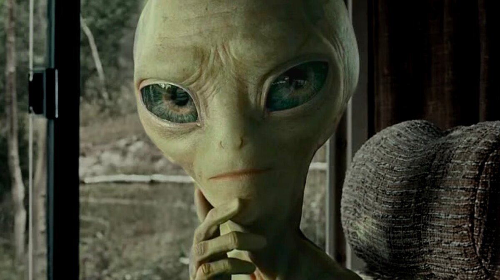

11 доказательств того, что инопланетяне воруют носки :)))
Пусть тот, кто не сталкивался с пропажей носков, первым бросит в меня свой недовольный комментарий. Носки пропадают — и это факт.
Обычно мы ищем проблему в себе, в нашей неаккуратности, рассеянности, неспособности соблюдать чистоту и порядок в жилом помещении. Но даже лучшие из нас не застрахованы от пропажи носков.
Так что, если дело не в нас, а в неведомой силе, остающейся в тени? Конечно же, я говорю об инопланетянах. Но прежде, чем вы покрутите пальцем у виска, прошу все же выслушать мои аргументы, ведь если я прав, мы находимся на пороге величайшего открытия.
Наука не может объяснить все случаи пропажи носков.
Ученые по всему миру теряют носки, ищут их и не могут найти. Если бы существовала убедительная научная теория пропажи носков, то ученые уже давно нашли бы все пропавшие носки.
Не существует доказательств тому, что инопланетяне не воруют носки.
Не существует законов физики, которым противоречило бы то, что инопланетяне воруют носки. То, что мы не имеем четко зафиксированных видеозаписей этого процесса, говорит лишь о том, что инопланетяне не желают быть обнаруженными.
Доказательство от причинности.
У всего существует причина. У пропажи носков она тоже должна быть. Кому нужно, чтобы пропадали носки? На этой планете заинтересованных нет. Поэтому логично предположить, что речь идет о существах с другой планеты. Не могут же носки сами пропадать?
Доказательство от космологии.
Земля — идеальное место преступления. Появление человека и развитие цивилизации, способной массово производить носки в промышленных масштабах, возможно только при наличии и сочетании чрезвычайно жестких и парадоксально маловероятных условий.
Например, будь Земля немного ближе к Солнцу, все живые организмы, а также носки сгорели бы. Учитывая, что возраст Вселенной на многие миллиарды лет превышает возраст Земли, логично предположить, что Землю спроектировали высокоразвитые инопланетяне. Возможно, их родная планета была не так благоприятна для появления носков.
Доказательство от общих представлений людей.
Носки пропадают у представителей всех наций и народов, которые в своем развитии дошли до ношения носков. Также у всех наций и народов есть представления об инопланетянах. Это не может быть совпадением.
Доказательство от индустриальной революции.
После индустриальной революции число наблюдений НЛО заметно выросло, что совпало с развитием текстильной промышленности. Это не может быть совпадением.
Доказательство от экстраполяции.
Носки можно обнаружить на разной высоте: в квартирах на первом этаже, втором, третьем и т.д. Продолжая эту цепочку рассуждений, можно экстраполировать, что носки обнаружатся на любой высоте, т.е. даже в космосе и даже на других планетах.
Доказательство от говорящего куста.
Данное доказательство продиктовано автору говорящим кустом. Куст сказал мне, что он с другой планеты и попросил носки. Я отказал, но тут свершилось чудо. Носки сами пропали с моих ног.
Доказательство от теории вероятностей.
Вероятность пропажи каждого отдельного носка не велика, хоть и достаточно большая, чтобы списать на случайность. Однако в мире пропадают миллионы носков. Вероятность одновременной пропажи миллиона носков практически равна нулю.
Доказательство на основе свидетельских показаний.
Многие люди утверждают ,что их похищали инопланетяне. Некоторых похищали вместе с носками. Технически — это похищение и носков тоже. Свидетели не могут ошибаться.
Доказательство от личностного опыта веры.
Я верю, что инопланетяне воруют носки. Следовательно, я это научно доказал. Научность такого аргумента недавно была признана официальной наукой! Я рад, что к десяти исходным доказательствами, которые я сформулировал в 2016 году, я теперь могу добавить еще одно.

Разумеется, по отдельности изложенные аргументы можно критиковать, но из их совокупности напрашивается очевидный вывод: инопланетяне существуют и воруют носки. Но зачем они это делают?
Если мы обратим внимание на то, что пропадают обычно не новые носки, а грязные и ношенные, можно предположить, что инопланетяне используют их в парфюмерной промышленности. Совершенно не очевидно, что восприятие запахов на разных планетах одинаково. Запах грязных потных носков, противный для большинства людей, может считаться благовонием на далекой планете Носкиру. Может поэтому носки реже пропадают у девушек (их носки реже достигают нужной степени потности).
А теперь я обращаюсь к тем, кого я не убедил своей аргументацией. Это, конечно, ваше право оставаться закостенелыми скептиками. Смею предположить, что и в Бога вы не верите, и астрологию с гомеопатией отрицаете, и думаете, что глаз сам собой от случайных мутаций получился.
Рекомендую не быть такими зашоренными адептами науки, отрицающими альтернативные методы познания, ведь кроме науки есть еще и религия и эзотерика.
Если будете и дальше верить только науке, масса критически важной информации пройдет мимо ваших ушей, и вы так и не узнаете правду о ваших носках, инопланетянах и основах мироздания.
Padding с картинкой.
Знаю, что не используем padding с картинками, но попробовала, как и было велено:))))
Padding меняет размеры картинки